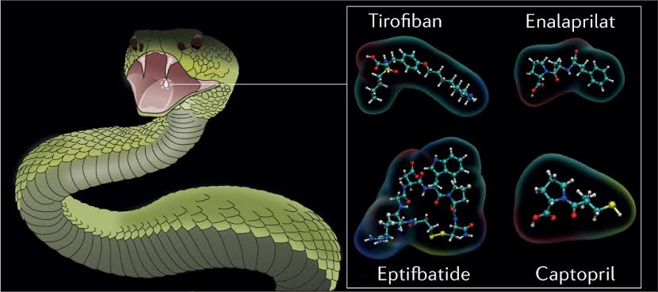

The Healing Venom: How Snake Poison is Revolutionizing Modern Medicine.
When we think of snake venom, the first thing that comes to mind is danger—a deadly substance capable of shutting down nervous systems, destroying tissues, and ending lives within minutes. But what if I told you that this same venom, often feared and avoided, is now being harnessed as a powerful tool in modern medicine? From treating life-threatening conditions to developing groundbreaking therapies, snake venom is proving to be an unlikely hero in the world of healthcare.
A Deadly Cocktail with Life-Saving Potential
Snake venom is a complex mixture of proteins, enzymes, and peptides, each with a specific biological function. While these compounds can be lethal in their natural form, scientists have discovered that when isolated and carefully modified, they can be used to treat a variety of medical conditions.
Pain Relief from Poison
Another fascinating application of snake venom is in pain management. The venom of the cone snail (not a snake, but another venomous creature) has inspired the creation of *ziconotide, a potent painkiller used for chronic pain in patients who don’t respond to traditional treatments. Similarly, researchers are studying the venom of the *black mamba, one of the deadliest snakes in the world, for its potential to create non-addictive painkillers that could revolutionize how we treat pain.
Fighting Cancer with Venom
Perhaps one of the most exciting areas of research is the use of snake venom in cancer treatment. Certain compounds in venom have been found to target and destroy cancer cells while leaving healthy cells unharmed. For instance, the venom of the Bothrops asper snake has shown promise in inhibiting the growth of tumors, offering a potential new avenue for cancer therapy.
The Ethical and Scientific Challenges
Of course, working with snake venom isn’t without its challenges. Extracting venom is a delicate and dangerous process, often requiring skilled handlers to "milk" the snakes. Additionally, the ethical implications of using animals for medical research must be carefully considered. However, advancements in synthetic biology are paving the way for lab-created versions of venom compounds, reducing the need for direct extraction and making the process more sustainable.
A Testament to Nature’s Complexity
The use of snake venom in medicine is a powerful reminder of how even the most dangerous elements of nature can be repurposed for good. It’s a testament to the ingenuity of scientists and the incredible complexity of the natural world. As research continues, who knows what other life-saving secrets we might uncover in the venom of these fascinating creatures?
So, the next time you hear about a snake, don’t just think of it as a threat—think of it as a potential source of healing. After all, sometimes the line between poison and medicine is thinner than we realize.